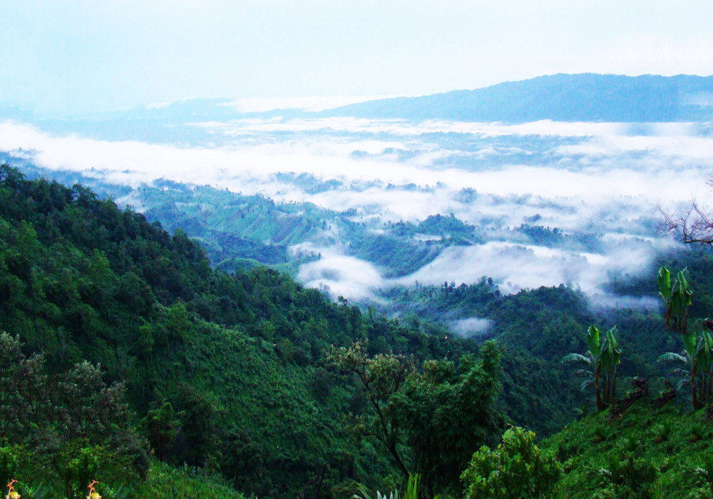

Day 1: Arrival | Route: Agartala City
- Activity: Arrive in Agartala. Visit the Ujjayanta Palace (Museum) and the Heritage Park.
- Stay: Agartala.
Tripura is a land of deep historical roots, once a princely state ruled by the Manikya Dynasty for centuries before merging with India in 1949. It is a unique cultural melting pot where 19 indigenous tribal communities (like the Tripuris, Reangs, and Jamatias) live in harmony with a significant Bengali population.
The state is famous for its royal palaces that float on water, ancient rock-cut carvings that rival the best in India, and a landscape dotted with bamboo forests and rubber plantations. It is a quiet, intellectual, and artistic hub, deeply influenced by the Nobel Laureate Rabindranath Tagore, who had close ties with the Tripura royal family.
Some Interesting Facts about Tripura:
Agartala: The Royal Capital
|

|

|
Unakoti: The Shiva Pilgrimage
|
Neermahal: The Water Palace
|

|
|
 |
Jampui Hills: The Land of Eternal Spring
|
1. By Air
|
2. By Rail
|
|
3. By Road
Roads are generally good, connecting all major tourist spots.
|
Choose Your Vibe
The Royal & Religious TrailBest for: History buffs, families, and pilgrims.Day 1: Arrival | Route: Agartala City
Day 2: Shakti Peeth | Route: Agartala ➔ Udaipur
Day 3: The Lake Palace | Route: Udaipur ➔ Melaghar
Day 4: Border Ceremony | Route: Melaghar ➔ Agartala
Day 5: Departure
|
The Hills & Carvings TrailBest for: Nature lovers and photographers.Day 1: Arrival | Route: Agartala
Day 2: Faces in Rock | Route: Agartala ➔ Unakoti
Day 3: Up the Hills | Route: Unakoti ➔ Jampui Hills
Day 4: Sunrise Views | Route: Jampui Exploration
Day 5: Return Journey | Route: Jampui ➔ Agartala
Day 6: Departure
|
| Time | Best For |
|---|---|
| October to March | Winter: The most pleasant time. Ideal for walking tours of Unakoti and boating at Neermahal. |
| October (Durga Puja) | Festivals: Agartala celebrates Durga Puja with as much grandeur as Kolkata. A great cultural experience. |
| November | Orange Festival: Held in Jampui Hills, celebrating the harvest of lush oranges. |
Important things to know before you pack your bags.
Unlike many other Northeast states, Indian citizens do not need an Inner Line Permit (ILP) to enter Tripura. You can travel freely.
Tripura is surrounded on three sides by Bangladesh. Your phone network might switch to an international roaming network near the border areas. Manually select your Indian carrier in settings to avoid charges.
Tripura is a fish-loving state. While vegetarian food is available (thanks to the Bengali influence), options might be limited in tribal areas. Paneer and Dal are usually available in tourist lodges.
Do not leave without buying bamboo handicrafts. The workmanship is exquisite. The Purbasha Govt Emporium in Agartala is the best place for authentic items at fixed prices.
When visiting temples like Tripura Sundari or walking through villages, dress modestly. Comfortable walking shoes are a must for Unakoti as there are many stairs.
Bengali and Kokborok are the main languages. Hindi is widely understood in Agartala and tourist centers. English works well in hotels and with officials.